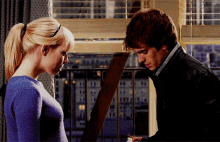
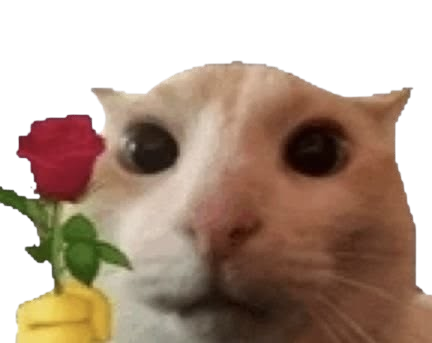

Lindo, tengo una sorpresa para ti...
¿Quieres verla? (ɔ◔‿◔)ɔ ♥
Quiero que sepas que solo pienso en ti...

✨ Te dedico esta canción ✨
Escucha esta canción mientras miras las otras sorpresas
Especialmente para ti
5 Cosas que Amo de Ti ❤（っ＾▿＾）

1. Tu sonrisa
Ilumina hasta mi día más oscuro.

2. Tus abrazos
Mi lugar seguro en todo el universo.

3. Tu nobleza
La forma tan pura en la que me cuidas.

4. Tu sentido del humor
Amo reírme siempre contigo.

5. Simplemente TÚ
Amo cada pequeño detalle de ti.
Nuestra Playlist Especial (っ◔◡◔)っ ❤
Pausa la otra canción si quieres escuchar
Muchas canciones que me recuerdan a TI
Para mi persona favorita 🕷️
Desde que te vi por primera vez, me pregunté: ¿quién será él?
Admito que, desde ese momento, me parecías alguien muy lindo. A veces te miraba por la ventana, sin imaginar siquiera que algún día podrías llegar a interesarte en mí. Nunca pensé que aquello que comenzó con una simple mirada pudiera terminar significando tanto para mí.
Cuando mandaste ese mensaje a mi Instagram, sentí curiosidad. Me pregunté si realmente eras tú… y no me equivoqué. Te respondí porque eras tú, y poco a poco descubrí que, además de parecerme lindo, eras una persona increíblemente agradable.
A medida que pasaban los días y hablábamos cada vez más, comenzaste a interesarme mucho más. Nunca imaginé que llegaría a esperar con tantas ansias un mensaje de alguien. Que una simple notificación pudiera cambiarme el ánimo, hacerme sonreír o hacerme sentir tan feliz.
Y hay algo que nunca voy a olvidar: cada vez que te contaba mis cosas malas, mis inseguridades o aquellas cosas que me hacían sentir mal conmigo misma, tú encontrabas la manera de mirar más allá de todo eso. Tú veías lo bueno en mí cuando yo misma no podía hacerlo. Y con tus palabras lograste hacerme sentir tan bien que, por primera vez en mucho tiempo, siento que ya no tengo que cargar con la culpa de tantas cosas que me han pasado.
Eres mi consuelo. Esa persona con la que puedo sentirme tranquila, escuchada y querida. Y, quizás, lo que más me sorprende es sentir que realmente le importo a alguien.
Estar contigo se siente mágico. Quiero compartir contigo cada momento que pueda, porque no hay un solo día en el que no aparezcas en mis pensamientos. Incluso cuando otras personas me miran, se acercan o me piden mis redes sociales, mi mente simplemente vuelve a ti.
Y es extraño, porque ni siquiera puedo imaginarme buscando a alguien más. No me interesa pensar si alguien podría ser más atractivo, más interesante o diferente, porque para mí no se trata de encontrar a alguien “mejor”. Se trata de que tú eres tú, y eso es precisamente lo que quiero.
Quiero serte fiel, y sé que lo seré. Porque entre tantas personas, llegaste tú. Y no encuentro a nadie que pueda compararse contigo.
Eres atento, detallista, comprensivo… y tienes una manera de tratarme que jamás imaginé recibir. Hubo palabras y gestos tuyos que incluso me hicieron llorar, pero esta vez fueron lágrimas de felicidad. Y creo que eso dice mucho de lo que has llegado a significar para mí.
Sé que nadie es perfecto. Sé que tú tampoco lo eres y que yo tampoco lo soy. Pero hay momentos en los que me haces pensar que quizá, para mí, eres la excepción.
Porque no llegaste a mi vida haciendo ruido. Simplemente apareciste, poco a poco, y sin darme cuenta te convertiste en alguien que ocupa un lugar enorme en mi corazón.
Y si alguna vez me preguntara cómo empezó todo esto, probablemente volvería a aquella primera mirada por la ventana y pensaría en lo curioso que es el destino…
Gracias por ser mi refugio.
Te quiero con todo mi corazón ≧◡≦
